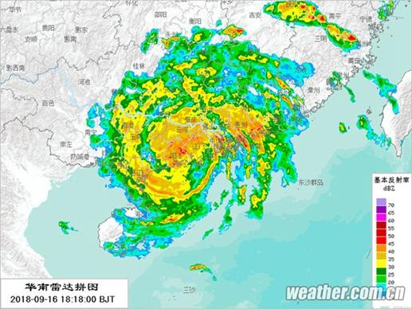

它终于来了！
从菲律宾到中国南海，再从南海奔袭广东、广西、海南等沿海省区，几天之内它不舍昼夜一路北上西进，惊动了一个又一个城市。
这个超级台风被称为“山竹”，但并不像它的名字那么友好。相反，它是一个暴怒、威猛、狂放、戏谑的家伙。9月16日17时前后，“山竹”裹挟狂风暴雨正式在广东江门台山海宴镇登陆，登陆时中心附近最大风力14级，速度为每小时162公里。
“山竹”瞬间改变了粤港澳桂等多地人们的生活。广东全省17日各级各类学校、幼儿园继续停课一天。有广州市民对第一财经表示，虽然“山竹”不是在广州地界登陆，这也是近20年来他亲身经历过的最大台风了。考虑到“山竹”的暴脾气，各地政府已多次发文让市民注意安全。而确保安全的最好办法，当然是宅在家里。但与普通的市民不同，第一财经记者在采访中了解到，负责电力生产与输送的电力企业——电网和核企，正在与“山竹”进行激烈的鏖战。